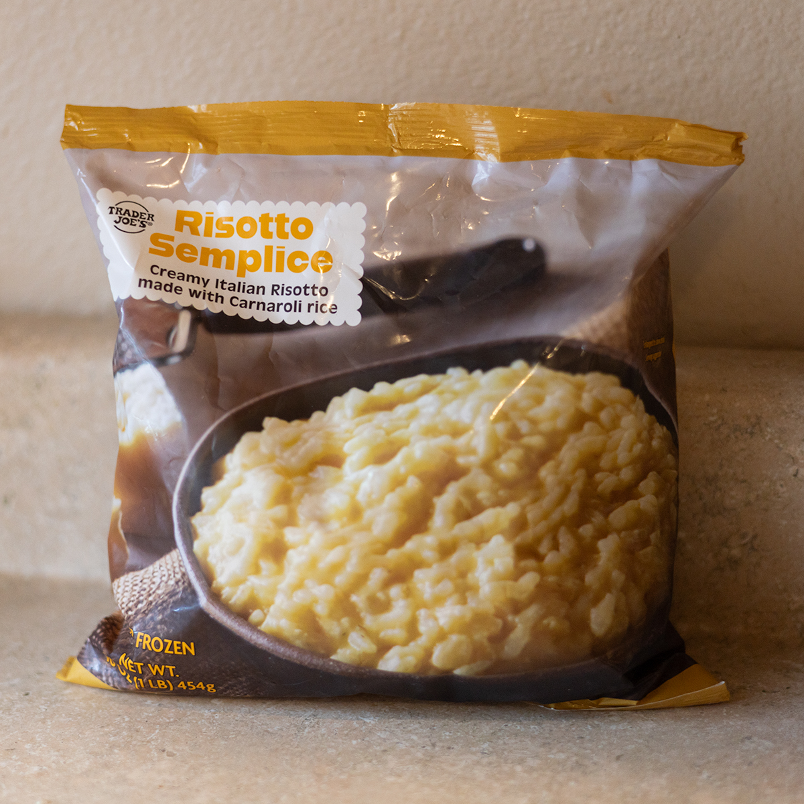
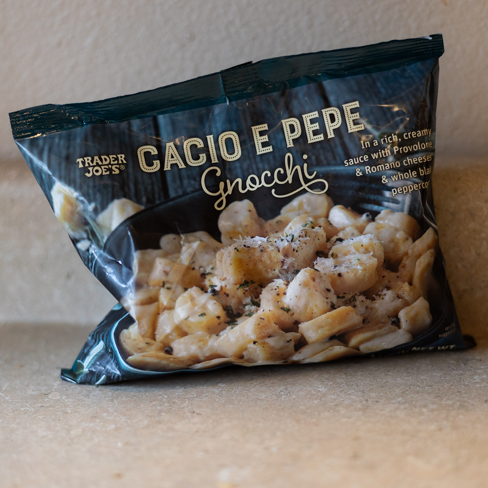
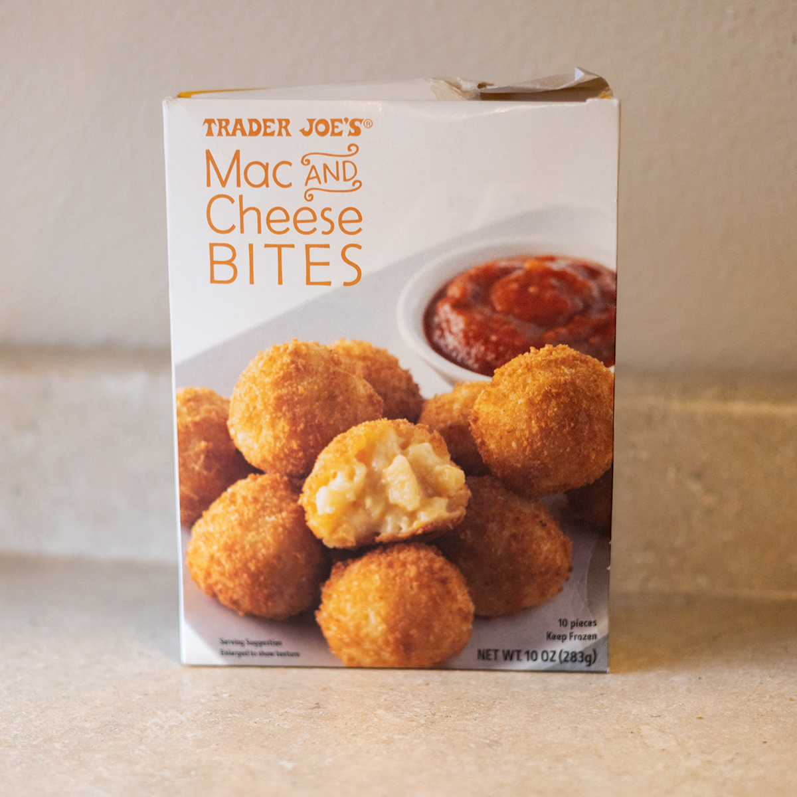
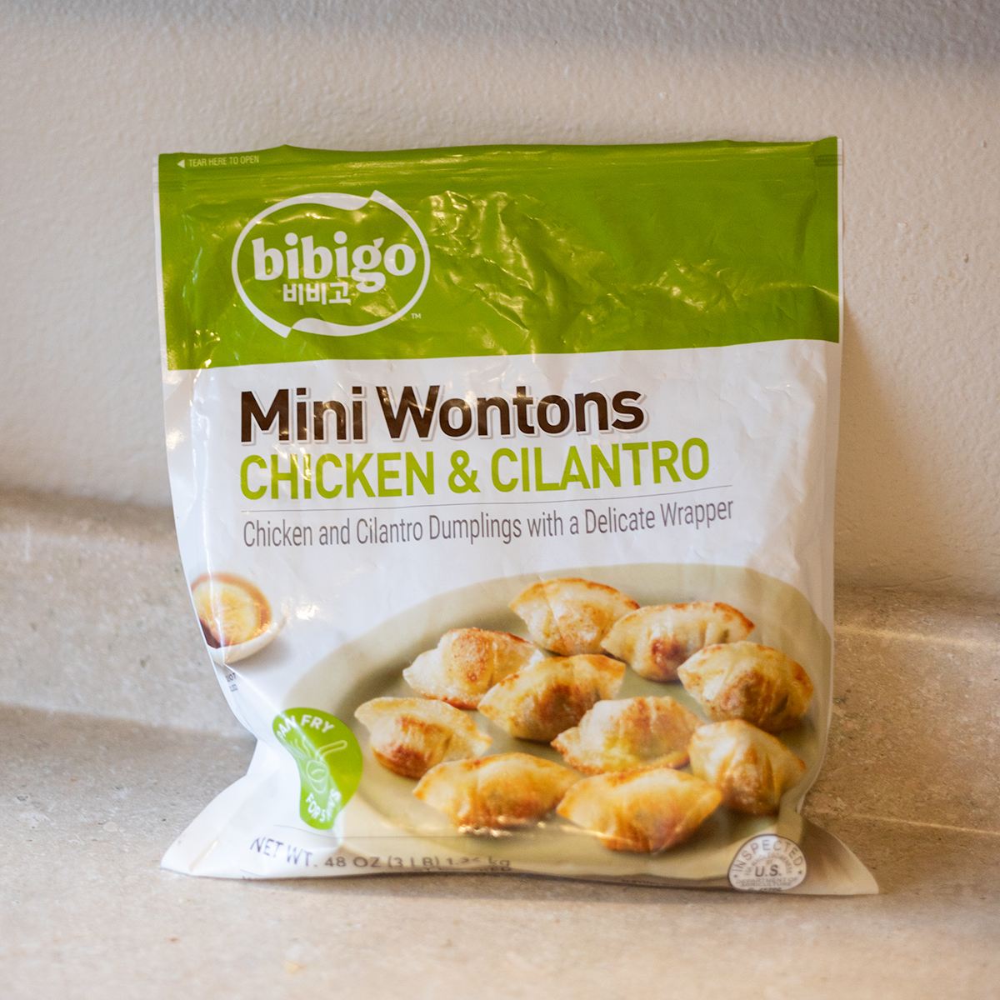
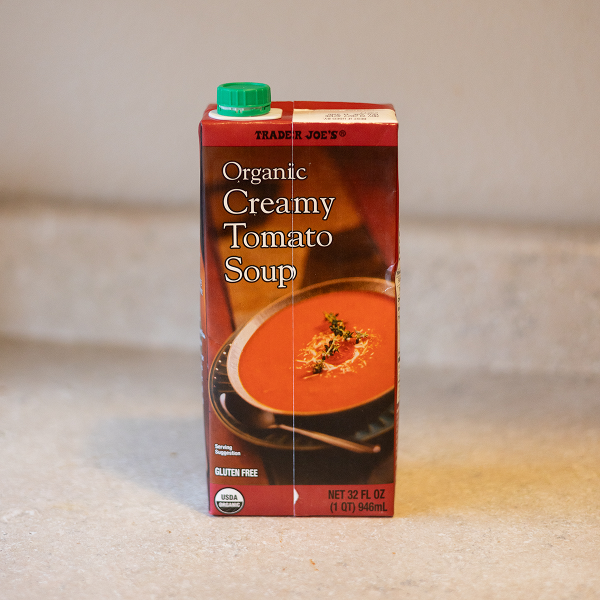

Ready-Made Items
I don't need to make everything from scratch. It makes too many dishes and I always end up with left over ingredients. I love a tasty ready-made option.Let's be honest, this is just a love letter to Trader Joe's frozen section. When I only have the energy to spend on making a main dish, these are the options I turn to to fill out the plate.





Honorable Mentions
- Trader Joe's Scallopini Potatoes- even good with microwave preparation
- Red Baron Pizza, classic crust- Great base when topped with fresh veggies!
- Just Bare Spicy Chicken Strip- airfryer makes this Costco find a staple.
- Hertiage Lasagna Soup- a dollop of ricotta goes crazy in this Costco item.